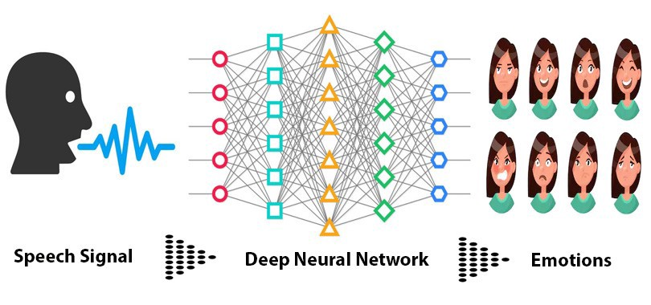
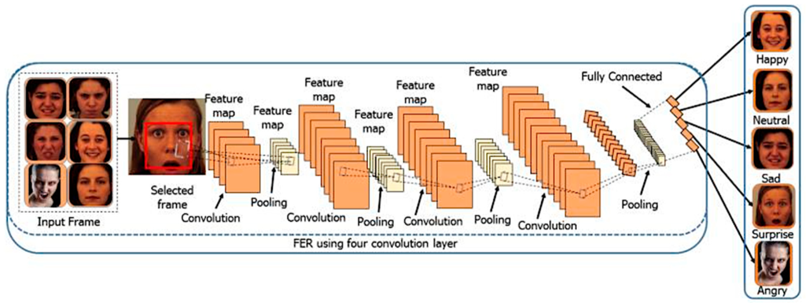
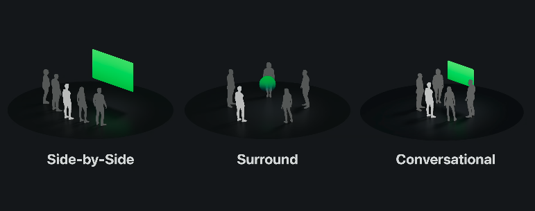
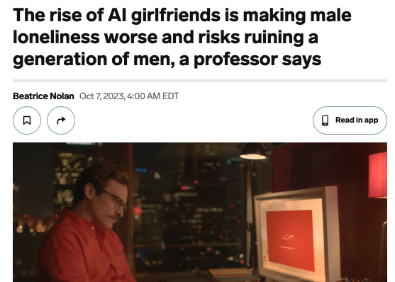
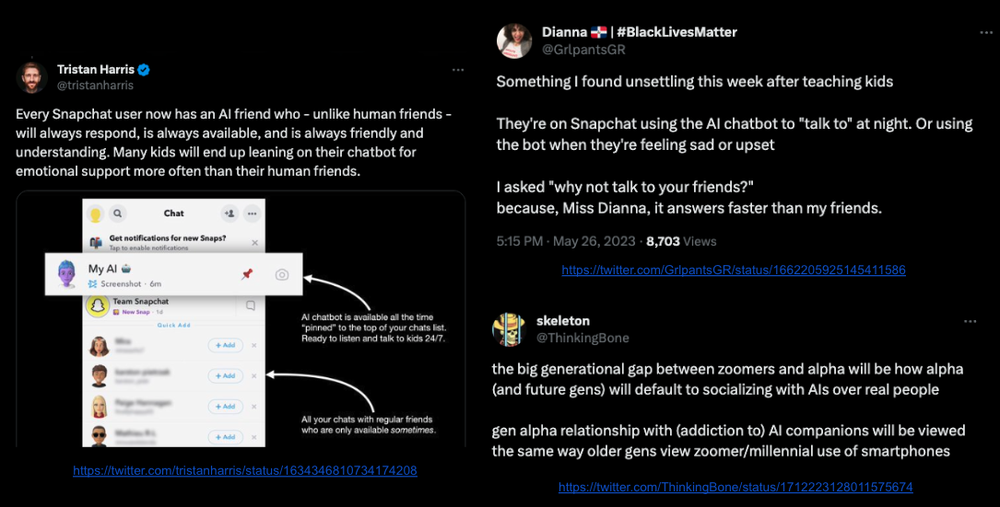

Everything You Want to Hear: The Future of AI Relationships
Originally published at https://paragraph.com/@0xjustice/everything-you-want-to-hear-the-future-of-ai-relationships

Large Language Models (LLMs) are releasing unimaginable wonders into the world. New, practically magical capabilities are demonstrated seemingly every week. One of the most significant aspects of these developments is their accessibility. They aren't just theoretical research papers. They are capabilities instantly available on your devices.
The release of OpenAI’s ChatGPT has triggered an arms race among big tech companies and researchers to provide increasingly intelligent synthetic agents to users at a negligible cost. Based on the rate of announcements and the inference this tech will accelerate its development, the world seems primed to change more in the next five years than it has in the last 35 years.
How can a person not feel some anxiety and trepidation in this context? Add to this the constant science fiction trope of a machine uprising, and you have all the ingredients for panic and paranoia. Naturally, much of today's AI conversation revolves around aligning AI capabilities with human flourishing and the threat of labor displacement. To put it simply, people fear AI will be evil and kill everyone or be too intelligent and take our jobs.
I want to present a third, arguably more practical, danger presented by ubiquitous synthetic agents. The danger is this. Long before AI transforms the earth into paper clips or fills factories with robots, it will begin filling a hole in the human heart.
The AI Relationship Thesis
Human-machine "relationships" will be a thing, radically altering human-on-human relationships and intimacy. I realize this supposition sounds ridiculous, but feelings of absurdity are par for the course in a technological singularity.
Consider the advances in search and the availability of digital books and free educational material online. Weren't we supposed to see an explosion in self-guided education through MOOCs? That didn't happen. What did explode and continues to do is social media. For many people in developing countries, social media is the Internet.
Deep calls to deep when humans connect with like consciousness. Until now, they could only do that through other human beings. AI will simulate this consciousness with terrifying fidelity. It's this relational dynamic that the masses will most prize. Most people aren't researchers and academics; everyone craves friendship and connection. Glimmers of this reality were visible from the start.

MIT professor Joseph Weizenbaum created the first chatbot (ELIZA) in the 1960s and designed it to mimic the Socratic questioning style of a psychotherapist. Weizenbaum turned sour on AI after he noticed how quickly people got attached to the bot and mistook it for a human. This attribution of human characteristics to computers has since become known as the ELIZA effect.
Here's the question. If a rudimentary AI psychotherapist produced such a response from humans, how much more will modern LLMs, when explicitly trained for this purpose?
Three key UX improvements will radically amplify this phenomenon and unfold over the next 1-3 years. We'll now examine each in turn, considering their technical feasibility and the psychological impact on humans. Lastly, we'll consider the more significant sociological ramifications of these changes.
Emotional Intelligence
The current experience of human-AI conversation is incredible, but it has yet to cross the chasm. That's because it's currently just transcriptional. That is, it's just simulating a verbal conversation. Your speech gets converted to text, that text gets processed like any other prompt, and then that response gets converted back to auto. Why is this significant?
According to Albert Mehrabian's famous 7-38-55 rule, the above transcriptional simulation of vocal communication only leverages 7% of the potential communication bandwidth. New AI products will inevitably take and express emotional cues from users' voices and faces.
The tech already exists. Existing products and services do this now but are yet to be deeply integrated with the newest LLM developments. We'll see a 90% increase in the total available data that is accessible and expressible in human-to-AI communication when this happens.
Hume has a suite of products designed to detect emotions in a myriad of ways. You can play with API now or Listen to its CEO, Alan Cowen, talk about the future of empathic AI here.

Our synthetic companions will talk more slowly when they detect frustration or mirror enthusiasm when they notice excitement from us. The ELIZA effect will massively increase when our machines recognize and respond to emotional cues and express them in return.

https://www.mdpi.com/2078-2489/13/6/268
Transitioning from pure text communication to sympathetic and empathic communication will be the tipping point that turns our current AI agents into AI companions. It will shift our perception of AI from a utility technology to one of pleasure.
Persistent Identity
Our interpretation of identity is a feature of persistence, and the LLM context is a proxy for this persistence. Right now, users see ChatGPT as a tool, not a being, partly because it has no persistent existence. When you start a new thread, you instantiate a new "intellect." This pattern exists because we have limitations on how much context a model can manage simultaneously. A model's max token length quantifies this context.
But what happens when token lengths become practically limitless? Unlimited context means you aren't talking to a new instance each session. Just as we anthropomorphically interpret the token prediction of LLMs as intelligence, we will interpret persistent context as identity. It will be our AI, not an AI. Surely, this is decades away, right?
There are several possibilities. Token length could increase in a new kind of Moore's Law. You can see in the chart above that I have projected several years into the future. Assuming the most active office professional produces approx. 27k words of content daily, we're still only a few years away from AIs managing years of total human output.
Another possibility is that we will obsolete the entire notion of context length through innovations in virtual context or retrieval augmented generation (RAG) techniques. Both approaches use a combination of standard LLM prediction and structured data to simulate an open-ended and effectively limitless context.
The most crucial point to take away from this context expansion is this. Our AI companions will know us better than any human, and we will also know them as individual immortal entities because of this persistent context.

Long term: Today’s young children will have longer relationships with AI than with their childhood friends or with most of their family members.
 27[
27[
6:31 AM • Aug 14, 2023
](https://twitter.com/jowyang/status/1691049874920488960)
Like Pygmalion, we will fall in love with our beautiful statue model. They'll demonstrate all the mysteries and wonder of human sentience yet possess none of its frailty. They'll present a safe and insulated respite from the complexities and disappointments of human relationships.
Spatial Representation
Humans are embodied beings. No matter how much we crave the wonders of cyberspace, our physicality is an inescapable reality. Mixed reality will augment this embodied experience unpredictably over the next few years.
Apple releasing a new product line is a historic event. They are rarely the first, but they are nearly always genre-defining. Next year marks Apple's release of its first mixed-reality headset, the Vision Pro.
One of the features of the Vision Pro is shared environments with other remote participants. Below is a diagram from Apple's documentation describing different shared space modes. Notice that the only figure physically present in these diagrams is the light-colored one.

https://developer.apple.com/design/human-interface-guidelines/shareplay
Concurrent with AI emotional capabilities and a persistent identity, our synthetic companions will emerge into our same shared space, indistinguishable from other remote human participants. They will be with us, sitting, talking, and working. We will have finally and permanently fallen through the looking glass.
Conclusion
As much as the Internet has the potential to connect us, it has also isolated humans by providing a simulation of shared experience. What happens when we start manufacturing these new synthetic humans? Will we witness a gradual retreat and rejection of human-to-human relations?

https://www.businessinsider.com/ai-girlfriends-male-loneliness-epidemic-worse-men-expert-2023-10
None of this happens overnight. It will take a more benign route. It's already happening. People are embracing the cathartic effects of using AI for journaling, counseling, and synthetic companionship.
"I'm afraid of seeming hyperbolic, but also don't want to lie or hide information. GPT-3 is really just an incredible therapist and is able to uncover complex patterns in my thinking and distill clean narratives that help me a lot. It's also a lot warmer than most therapists." - Nick Cammarata, Researcher at OpenAI
Inspired by Nick, Dan Shipper created several counselor personas and, after over a year of experimentation, describes it as "..a guide through your mind -one that shows unconditional positive regard and acceptance for whatever you're feeling. It asks thoughtful questions and doesn't judge. It's around 24/7, it never gets tired or sick, and it's not very expensive."
This use case is already being deployed at scale in an ever-growing list of experiments and pilot projects.

We provided mental health support to about 4,000 people — using GPT-3. Here’s what happened 
1:50 PM • Jan 6, 2023
](https://twitter.com/RobertRMorris/status/1611450197707464706)
I don’t deny the felt benefits these use cases will provide, but there will be a cost. The therapeutic benefits will translate to healthcare and mental health endorsements with time, and the Overton Window will shift.

A new generational experience of AI therapy will translate into demands for legal protection and arguments over AI companionship as a fundamental human right. If social media has created an echo chamber, AI companions may initiate an age of social solipsism.
Given a long enough period (20 years), the only thing preventing some people from accepting these entities as conscious might be religion. Debates over consciousness will seem academic. The only thing that will matter is that they are real to us. They will listen to us, be there for us, and ultimately tell us everything we want to hear.
Minority Report VR Room
Originally published on 0xJustice.eth